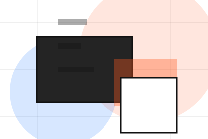
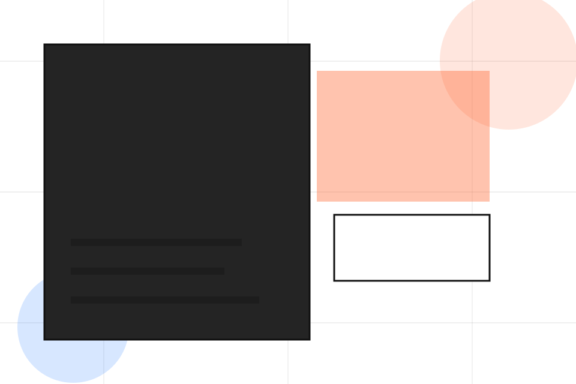
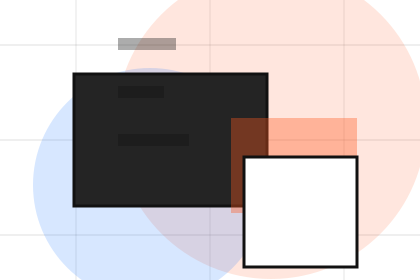
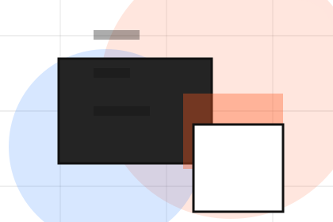
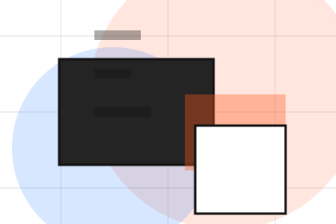
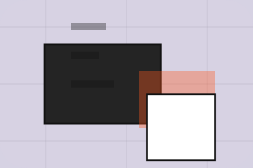

Before
The uncertainty, delay, or missed opportunity visitors bring into approach.
Cases / 01
Cases opens as a clear consulting decision hub: what Vector offers, who it helps, why it matters, and which route to take first.
The first screen combines positioning, proof, primary action, and fast internal navigation, so people can act immediately or compare the rest of the cases route with context.
Idea-led editorial hero
Select the closest route and Vector keeps the next step, proof, and follow-up expectation aligned with clarity, leverage and measurable progress.

Cases / 02
Problem frames the pressure behind the visit, then connects it to a practical path visitors can recognise and act on.
The copy avoids blame and panic. It shows the common friction, the practical consequence, and the calmer route Vector uses to move people forward.
Explore CasesProblem names the real friction visitors bring to the cases route, so the page feels relevant before any claim is made.
The copy connects that friction to practical risk, delay, confusion, or missed opportunity without exaggerating it.
The final cue moves visitors toward a clearer route instead of leaving them with the problem alone.
Cases / 03
Context shows what changes after the work: clearer decisions, visible progress, and proof points that connect the offer to real outcomes.
The layout connects before-and-after thinking with measured outcomes, making the result easy to scan without promising what the business cannot guarantee.
Explore CasesVector structures context around before, after, and a clear next route so visitors can compare the block quickly before they send a brief.
Send BriefCases / 05
Execution shows what changes after the work: clearer decisions, visible progress, and proof points that connect the offer to real outcomes.
The layout connects before-and-after thinking with measured outcomes, making the result easy to scan without promising what the business cannot guarantee.
Explore CasesThe uncertainty, delay, or missed opportunity visitors bring into execution.
The clearer, safer, or more valuable state Vector is designed to support.

The visible cue that connects execution to a believable decision, not a loose claim.
Cases / 06
Outcome shows what changes after the work: clearer decisions, visible progress, and proof points that connect the offer to real outcomes.
The layout connects before-and-after thinking with measured outcomes, making the result easy to scan without promising what the business cannot guarantee.
Explore CasesThe uncertainty, delay, or missed opportunity visitors bring into outcome.
The clearer, safer, or more valuable state Vector is designed to support.
The visible cue that connects outcome to a believable decision, not a loose claim.
Cases / 07
Metrics shows what changes after the work: clearer decisions, visible progress, and proof points that connect the offer to real outcomes.
The layout connects before-and-after thinking with measured outcomes, making the result easy to scan without promising what the business cannot guarantee.
Explore CasesThe uncertainty, delay, or missed opportunity visitors bring into metrics.
The clearer, safer, or more valuable state Vector is designed to support.
The visible cue that connects metrics to a believable decision, not a loose claim.
Cases / 08
Lessons shows what changes after the work: clearer decisions, visible progress, and proof points that connect the offer to real outcomes.
The layout connects before-and-after thinking with measured outcomes, making the result easy to scan without promising what the business cannot guarantee.
Explore CasesVector structures lessons around before, after, and a clear next route so visitors can compare the block quickly before they send a brief.
Send BriefCases / 09
Testimonial shows what changes after the work: clearer decisions, visible progress, and proof points that connect the offer to real outcomes.
The layout connects before-and-after thinking with measured outcomes, making the result easy to scan without promising what the business cannot guarantee.
Explore Cases

The uncertainty, delay, or missed opportunity visitors bring into testimonial.
Cases / 10
Vector closes the cases route with a clear action, a quick reminder of the value, and a low-friction way to send a brief.
Visitors who are ready can use the primary action. Visitors who are still comparing can scan the section links, proof, and support routes before they send a brief.
Send BriefThe final block keeps the choice simple: act now, compare one more proof route, or send enough detail for a focused response.
Send Briefclarity, leverage and measurable progress
A strategy studio site with large editorial type, idea-led modules, mosaic proof, and workshop conversion. Cases ends with a direct path to send a brief, plus enough context for visitors who still need to compare.

Send BriefInformation is provided for planning and should be reviewed for the final client, location, and operating rules.